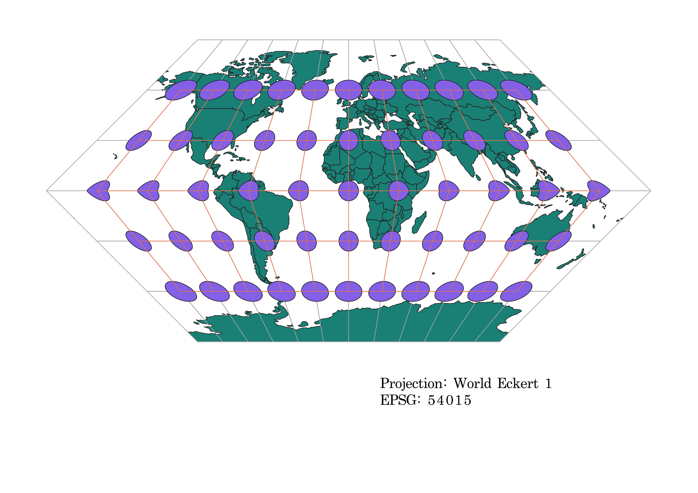
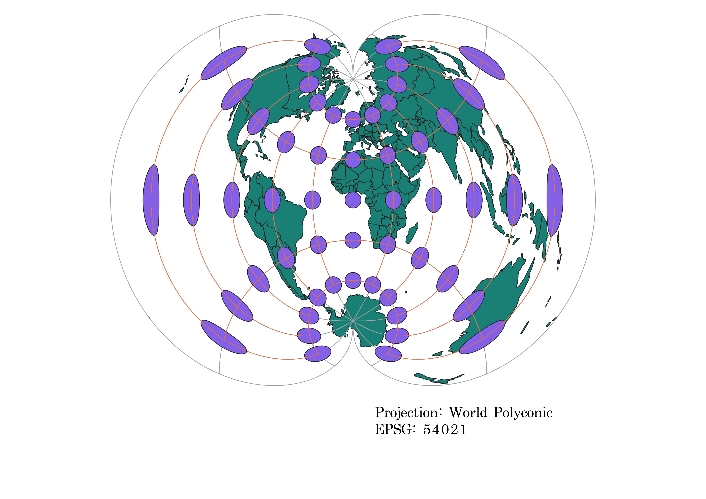

The first step was to add the Natural Earth shape file to my QGIS document. Then I used to Indicatrix Mapper pluggin to generate Tissot circles. I generated the nine different projections by changing the coordinate reference system on QGIS. I exported these maps using layout manager. This allowed me to create a PNG with the map and a text box with the projection name and EPSG. I placed them in my Github folder which linked them to my visual stuido code.
This projection distorts area close to the poles, but it preserves angels, directions, and distance. It is used to determine direction while navigating. There is no distortion at the equator, however the distortion increases closer to the poles.
This projection distorts area, distance, and direction. The Equator and Prime Meridian are both strait, however, the meridian and parallels become increasingly curved closer to the poles. This could be used on a small scale where an acurate area measurement isn't required

This projection is similar to the Mercator projection, but it does not distort area. There is no distortion around the equator; however, closer to the poles size and distance become distorted.

The parallels remain strait while the meridians curve outward. Scale along the parallels is preserved. Along the meridiums, distance, direction, shape, area, and angle becoming increadinly distorted toward the poles. It would not be a good map for navigation or many other purposes.

Scale is kept constant along the Equator. Distance, area, and angles are all preserved. However, shape becomes increasingly distored toward the poles. It could be used for maping along the equator on a large scale.

Distortion is symetrical along each parallel. However, distance, shape, area, and angles are distored along the meridian. It becomes increasingly distored futher away from the North Pole. This projection is best used when maping areas orienting east to west and at parallels closer to the North Pole.

This projection is similar in distortion to the projection 54027. Distortion is held constant on each parallel, and the projection gets increasinly distorted in distance, shape, area, and angles as the parallels go futher from the North Pole. While 54027 is a conic projection, 102016 is an Azimuthal projection centering around the North Pole. This map is most useful for navigation around the North Pole.

This projection distors distance, area, shape, direction, and angles. Area increases the futher away from the equator, and shape is distorted furthest away from the Prime Meridium. This map doesn't have much use other than presenting an interesting map shape.
This projection distors distance, area, shape, direction, and angles. Distortion is significant from east to west. The edges of the map have the greatest distortion. Distance is greatest along the furthest meridians and shorter along the furthest parallels. There is no distortion along the central meridian, so this map could be used for maping north to south.
